Welcome To Biggest 5 Cities in MAHARASHTRA
- Pune
- Mumbai
- Nashik
- Nagpur
- Aurangabad
1. Pune :
Punekars, as Pune residents are called. Pune is becoming the most loved
city in India. Be it the weather, the nightlife, education and jobs. Pune
represents an amalgamation of different cultures and a mixture of
different civilizations. The traditional Maharashtrian lifestyle is
prevalent in the city. Despite being a very modern city, Pune still houses
a lot of spirituality. It is a city that takes its culture seriously. Pune
is the city of Marathi influence. Hence, the city is proud of its Marathi
mother language. Here are the Interesting Facts About Pune to amaze you a
little more.
Some Famous Places in Pune
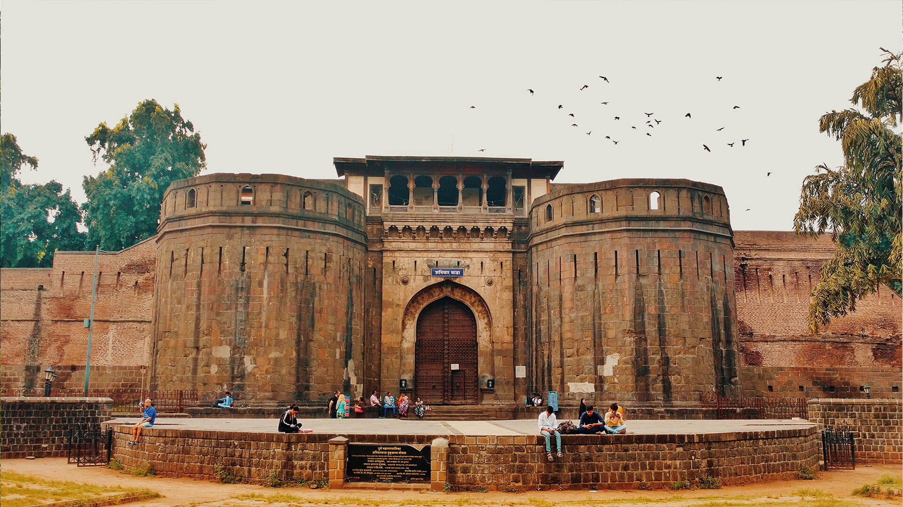
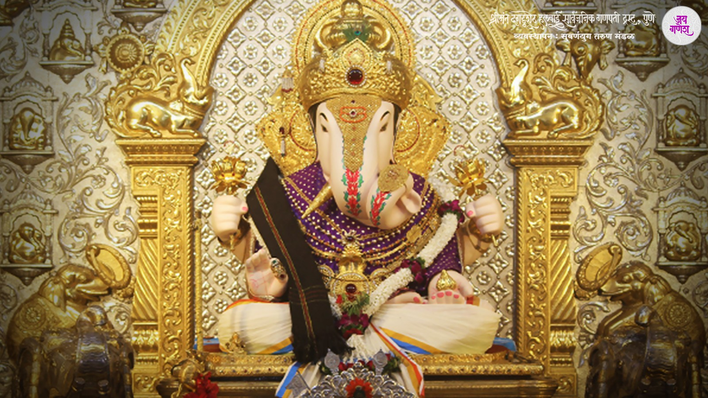
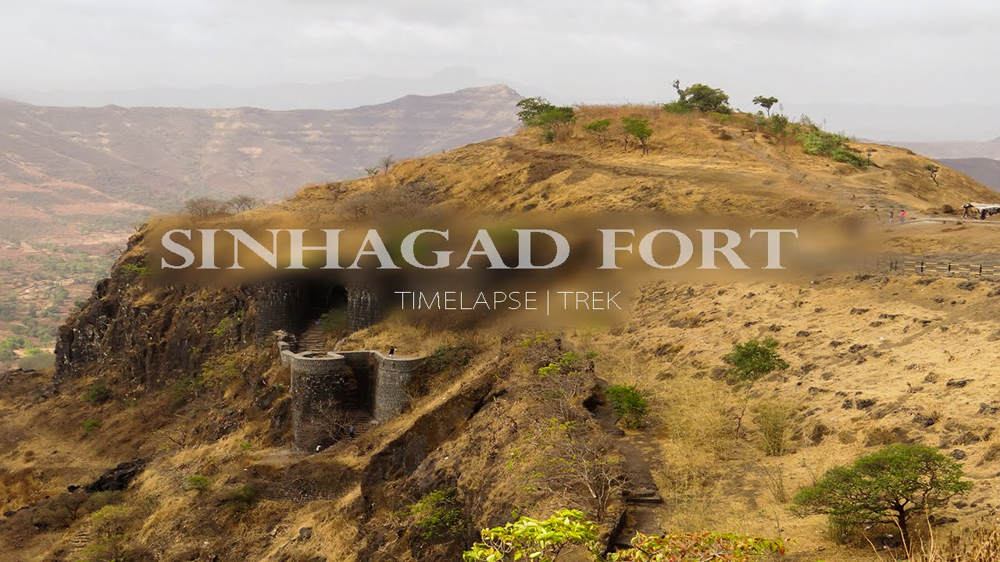
Population
| Pune City |
Total |
Male |
Female |
| City Population |
3,124,458 |
1,603,675 |
1,520,783 |
| Litreates |
2,496,324 |
1,317,345 |
1,178,979 |
| Children |
2,496,324 |
1,317,345 |
1,178,979 |
2. Mumbai :
Mumbai (also known as Bombay, the official name until 1995) is the capital
city of the Indian state of Maharashtra. Mumbai lies on the Konkan coast
on the west coast of India and has a deep natural harbour. In 2008, Mumbai
was named an alpha world city. It is also the wealthiest city in India,
and has the highest number of millionaires and billionaires among all
cities in India. The seven islands that came to constitute Mumbai were
home to communities of fishing colonies of the Koli people. For centuries,
the islands were under the control of successive indigenous empires before
being ceded to the Portuguese Empire and subsequently to the East India
Company when in 1661 Charles II of England married Catherine of Braganza
and as part of her dowry Charles received the ports of Tangier and Seven
Islands of Bombay. During the mid-18th century, Bombay was reshaped by the
Hornby Vellard project, which undertook reclamation of the area between
the seven islands from the sea. Along with construction of major roads and
railways, the reclamation project, completed in 1845, transformed Bombay
into a major seaport on the Arabian Sea. Bombay in the 19th century was
characterised by economic and educational development. During the early
20th century it became a strong base for the Indian independence movement.
Upon India’s independence in 1947 the city was incorporated into Bombay
State. In 1960, following the Samyukta Maharashtra Movement, a new state
of Maharashtra was created with Bombay as the capital.
Some Famous Places in Mumbai
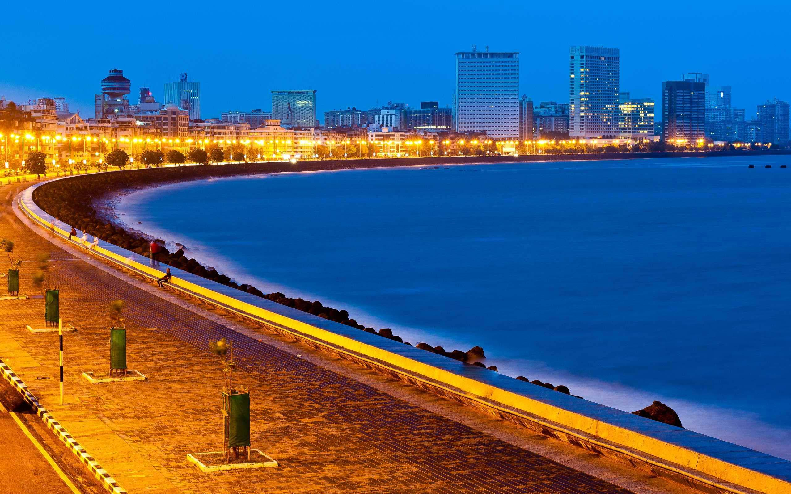


Population
| Mumbai |
Total |
Male |
Female |
| City Population |
3,124,458 |
1,603,675 |
1,520,783 |
| Litreates |
2,496,324 |
1,317,345 |
1,178,979 |
| Children |
2,496,324 |
1,317,345 |
1,178,979 |
3. Nashik :
Nashik District is located between 18.33 degree and 20.53 degree North
latitude and between 73.16 degree and 75.16 degree East Longitude at
Northwest part of the Maharashtra state, at 565 meters above mean sea
level. The District has great mythological background. Lord Rama lived in
Panchvati during his vanvas. Agasti Rushi also stayed in Nashik for
Tapasya. The Godavari river originates from Trimbakeshwar in Nashik. One
of the 12 Jyotirlingas also at Trimbakeshwar. Nashik has to its credit
many well known and towering personalities like Veer Sawarkar, Anant
Kanhere , Rev. Tilak, Dadasaheb Potnis, Babubhai Rathi, V.V. Shirwadkar
and Vasant Kanetkar just name few. Nashik is also known as Mini
Maharashtra, because the climate and soil conditions of Surgana, Peth,
Igatpuri resembles with Konkan. Niphad, Sinnar, Dindori, Baglan blocks are
like Western Maharashtra and yeola, Nandgaon, Chandwad blocks are like
Vidarbha Region. Nashik, Malegaon, Manmad, Igatpuri are some of the big
cities situated in the Nashik District.
Some Famous Places in Nashik
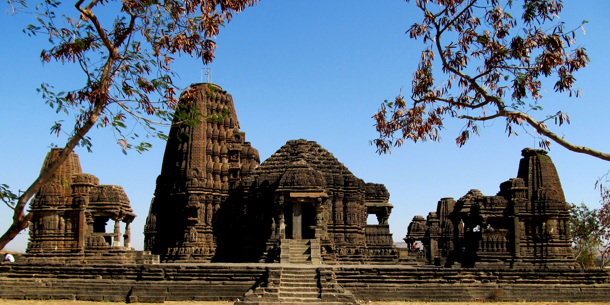
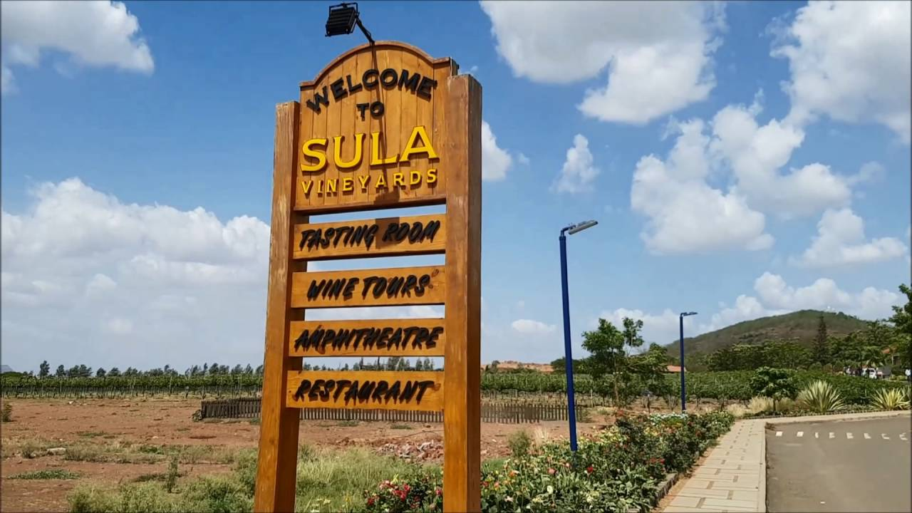
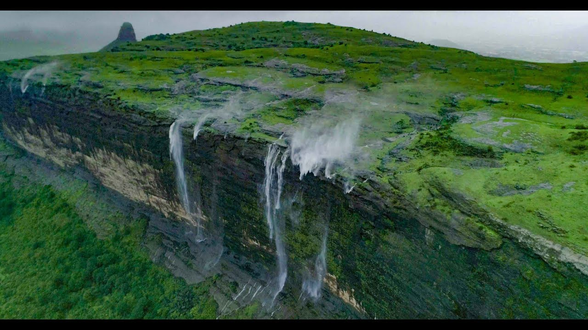
Population
| Nashik |
Total |
Male |
Female |
| City Population |
3,124,458 |
1,603,675 |
1,520,783 |
| Litreates |
2,496,324 |
1,317,345 |
1,178,979 |
| Children |
2,496,324 |
1,317,345 |
1,178,979 |
4. Nagpur :
Nagpur city is the winter capital of the state of Maharashtra, with a
population of 46,53,570. It has also recently been ranked as the cleanest
city and the second greenest city of India.In addition to being the seat
of annual winter session of Maharashtra state assembly “Vidhan Sabha”,
Nagpur is also a major commercial and political center of the Vidarbha
region of Maharashtra. ” Nagpur is also famous throughout the country as
“Orange City” for being a major trade center of oranges that are
cultivated in the region. Nagpur city was established by prince of Gond
tribe “Bhakt Buland” in first half of 18th century. Nagpur lies precisely
at the center of the country with the “Zero Mile Marker” indicating the
geographical center of India. It has 14 Talukas and 12 Assembly Segment
Constituencies.
Some Famous Places in Nagpur
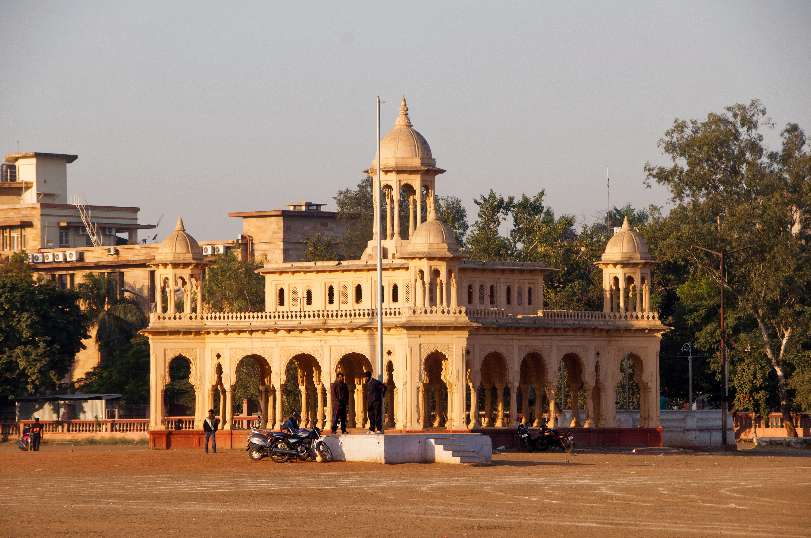
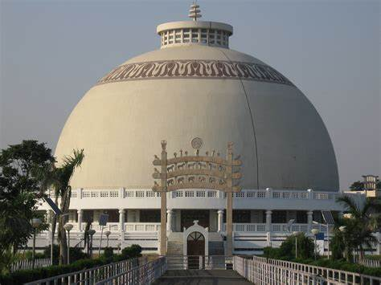
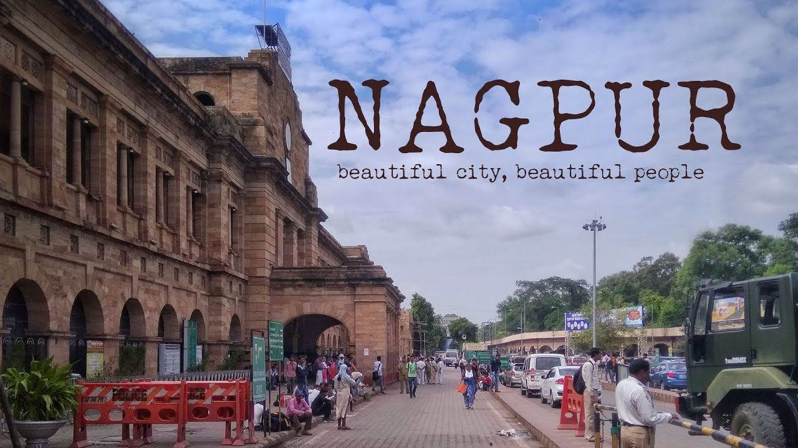
| Nagpur |
Total |
Male |
Female |
| City Population |
3,124,458 |
1,603,675 |
1,520,783 |
| Litreates |
2,496,324 |
1,317,345 |
1,178,979 |
| Children |
2,496,324 |
1,317,345 |
1,178,979 |
5. Aurangabad :
Aurangabad District is located mainly in Godavari Basin and its some part
towards North West of Tapi River Basin. This District’s general down level
is towards South and East and North West part comes in Purna-Godavari
river basin. The Aurangabad district’s North Longitude (Degree) is 19 and
20 and East Longitude (Degree) is 74 to 76. In Aurangbad district, total
Forest Area is 135.75 Sq.Km. as compare to Maharashtra the forest area of
Aurangabad is 9.03%. There are three mountains in Aurangabad District
namely 1) Antur – its height is 826 Meter 2) Satonda – 552 Meter 3)
Abbasgad – 671 Meter and 4) Ajintha 578 Meter, Average Height of Southern
portion is 600 to 670 Meter. The main rivers in Aurangabad district are
Godavari and Tapi and also Purna, Shivna, Kham . Dudhna, Galhati and Girja
rivers are the sub rivers of Godavari. The Aurangabad District’s total
area is 10,100 Square Kilo Meter out of which 141.1 Square Kilo Meter is
Urban area and 99,587 Square Kilo Meter is Rural Area. In Aurangabad rainy
season starts from the month of June to September- and October to
February-Winter Season and March to May Summer Season. The Average rain
fall of Aurangabad District is 734 mm and the Minimum Temperature is 5.6
D.C. Maximum Temperature is 45.9 D.C. In Aurangabad district as per the
Census 2011 total population is 3,701,282 and peoples mainly speaks
Marathi, Hindi, English and Urdu language.
Some Famous Places in Aurangabad
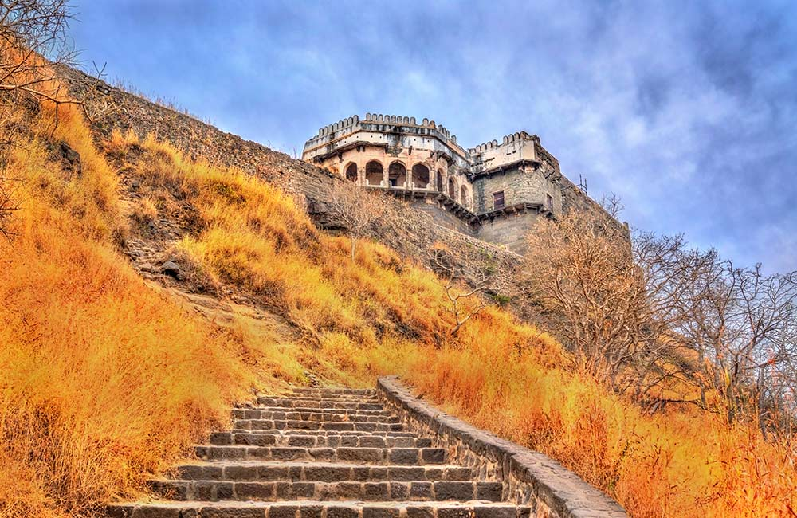
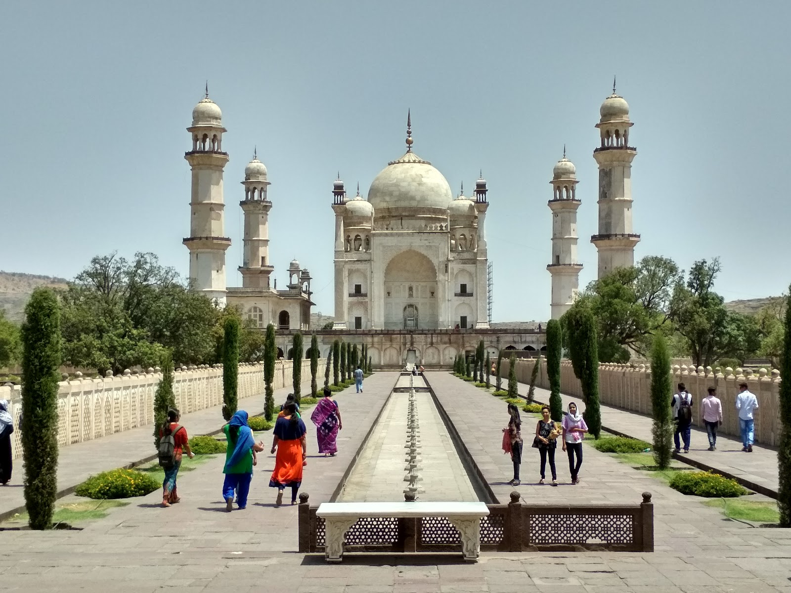
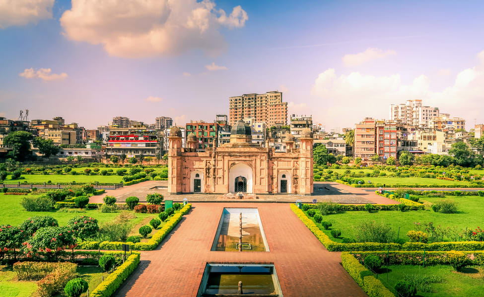
| Aurangabad |
Total |
Male |
Female |
| City Population |
3,124,458 |
1,603,675 |
1,520,783 |
| Litreates |
2,496,324 |
1,317,345 |
1,178,979 |
| Children |
2,496,324 |
1,317,345 |
1,178,979 |